Bookshelf
A running shelf of what I've read.
“A reader lives a thousand lives before he dies. The man who never reads lives only one.”
George R. R. Martin, A Dance with Dragons
A People’s History of the United States: 1492 - Present
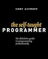
The Self-Taught Programmer: The Definitive Guide to Programming Professionally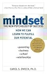
Mindset: The New Psychology of Success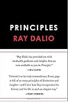
Principles: Life and Work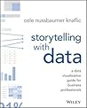
Storytelling with Data: A Data Visualization Guide for Business Professionals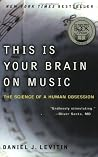
This Is Your Brain on Music: The Science of a Human Obsession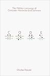
Code: The Hidden Language of Computer Hardware and Software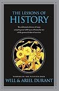
The Lessons of History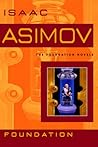
Foundation (Foundation, #1) Thinking In Systems: A Primer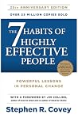
The 7 Habits of Highly Effective People: Powerful Lessons in Personal Change The Book of Life: Daily Meditations with Krishnamurti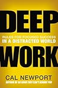
Deep Work: Rules for Focused Success in a Distracted World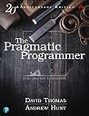
The Pragmatic Programmer: Your Journey to Mastery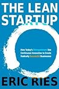
The Lean Startup: How Today's Entrepreneurs Use Continuous Innovation to Create Radically Successful Businesses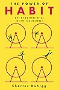
The Power of Habit: Why We Do What We Do in Life and Business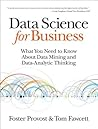
Data Science for Business: What You Need to Know about Data Mining and Data-Analytic Thinking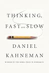
Thinking, Fast and Slow Night To Kill a Mockingbird Collapse: How Societies Choose to Fail or Succeed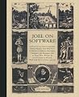
Joel on Software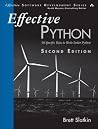
Effective Python: 90 Specific Ways to Write Better Python (Effective Software Development Series) The Sound and the Fury Hamlet The Great Gatsby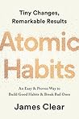
Atomic Habits: An Easy & Proven Way to Build Good Habits & Break Bad Ones The Innovator's Dilemma: The Revolutionary Book that Will Change the Way You Do Business The Art of Living: The Classical Manual on Virtue, Happiness and Effectiveness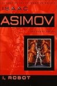
I, Robot (Robot, #0.1)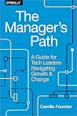
The Manager's Path: A Guide for Tech Leaders Navigating Growth and Change My Inventions and Other Writings Serious Python: Black-Belt Advice on Deployment, Scalability, Testing, and More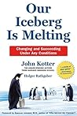
Our Iceberg Is Melting Meditations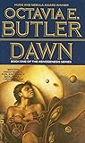
Dawn (Xenogenesis, #1)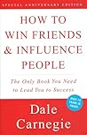
How to Win Friends & Influence People In Pursuit of Jefferson: Traveling Through Europe with the Most Perplexing Founding Father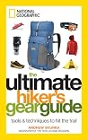
The Ultimate Hiker's Gear Guide: Tools and Techniques to Hit the Trail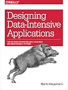
Designing Data-Intensive Applications The Chronicles of Narnia (The Chronicles of Narnia, #1-7) The Undocumented Americans Psycho-Cybernetics: A New Way to Get More Living Out of Life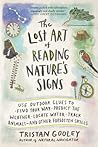
The Lost Art of Reading Nature’s Signs: Use Outdoor Clues to Find Your Way, Predict the Weather, Locate Water, Track Animals―and Other Forgotten Skills (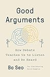
Good Arguments: How Debate Teaches Us to Listen and Be Heard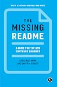
The Missing README: A Guide for the New Software Engineer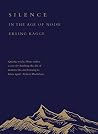
Silence: In the Age of Noise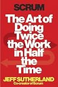
Scrum: The Art of Doing Twice the Work in Half the Time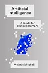
Artificial Intelligence: A Guide for Thinking Humans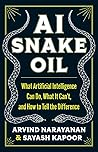
AI Snake Oil: What Artificial Intelligence Can Do, What It Can't, and How to Tell the Difference